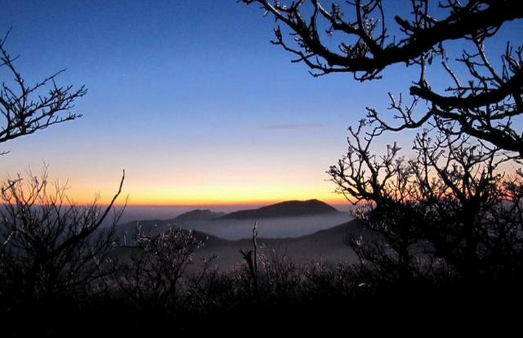
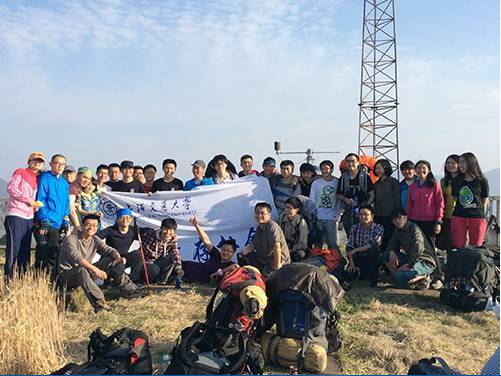
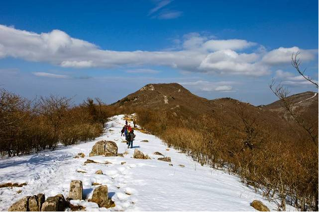
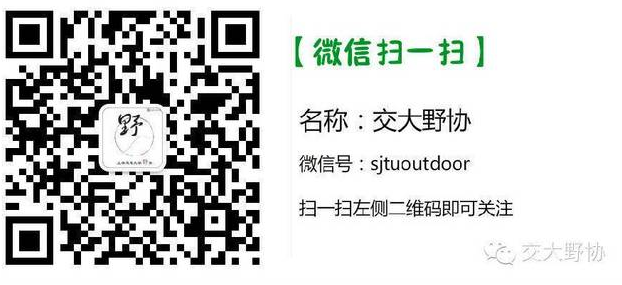

发信人: lvganyu (野协菌), 信区: outdoor
标 题: 交大野协五一会员线——“七尖”
发信站: 饮水思源 (2015年04月24日09:56:48 星期五)
关于穿越七尖：
东西天目7尖连穿素有华东第二虐之称，第一虐被“千八”夺走。七尖整体路程约50公里以
上，上升总高度4000-5000米。
从东天目山-大仙顶到西天目山-仙人顶（或者反穿）山脊穿越要翻过的七座山峰。 (七尖
为：龙王山、药王峰、千亩田、桐坑岗、仰天坪、大洋山、仙人台)，实际为九座山峰。
1、西天目山（仙人顶1506米）
2、龙王山 （1587米；实测最高点，也即测绘桩位置，在山顶平台的北端，1592米）
3、药王峰（节理峰1551米）
4、千亩田峰（1554 米），包括附近的三道岭、药王峰等都为同一山体
5、桐杭岗（1503米），又叫千峥岩
6、仰天坪（1248米），70度的陡坡，没有落脚的地
7、椅子坪（大洋山，1264米），大高岭和它是同一山体
8、仙人台（1291米）
9、东天目山（大仙顶1479米，实测1484米）
两天穿越七尖号称为“华东第二虐”，为降低难度，本次为三天穿越，但是强度仍然较大
，请大家务必认真考虑，谨慎报名，我们也会在报名后后进行一次体能选拔。
 screen.width - 200){this.width = screen.width - 200}">
 screen.width - 200){this.width = screen.width - 200}">
 screen.width - 200){this.width = screen.width - 200}">
报名方式：一起
报名链接：http://www.yiqixxx.com/e/iMjU3Mg==/
1、报名截止时间：4.26（周日） 18:00。
2、体力选拔时间：4.27（周一） 21:00。
3、准备会时间：4.28（周二） 20:30 原则上不接受不能参加准备会的同学报名。
4、有疑问请联系袁同学，联系电话：15921092507
费用：
装备费55元（帐篷20，背包15，睡袋加防潮垫10，锅加炉头5，气罐5）自己有装备则退相
应费用
车费：160元
保险：10元
向导费用：40元
腐败费用：35元
总计300元每人，非会员320元每人
最终费用多退少补
5、请关注BBS中outdoor版，人人主页野外生存协会，野协微信“sjtuoutdoor”、一起网
。
注：报名截止时间可能会视报名情况提前，人员选取不按照先到先得的原则，我们会调
整队伍新老比例和男女比例，本校会员优先。准备会后领队不会单方面取消队员资格（不
愿意签署知情同意书，购买保险，缴纳活动费者除外）。对于准备会后要求退队的同学，
若没有替代队员，活动费中车费部分不退还。
领队组介绍：
领队：袁同学
曾担任武功山（两次）、太白压队，三尖领队，昱岭关斥候，参与户外线路十余条。于20
13年初参加北京冬训。前协会登山队队长，现攀岩队成员。
副领队：文同学
担任巨龙顶(会员线中难度较大的线）担任副领队，出行昱岭关，龙须山；野协登山队，攀
岩队，医疗队预备队员；曾背西瓜爬楼而在野协与西瓜结下不解之缘。
压队：高同学
2011/9至今 担任武功山、大明山、昱岭关、三尖、楠溪江、金紫尖、十字峡谷、太
白、鳌太、纪龙山、北京灵山等十余条户外不同难度强度等级线路领队压队
2014/7 担任攀登队长与上海交大野外生存协会登山队队员攀登初级 技术
性雪山“半脊峰”（海拔5430）
活动时间：4月30日晚到5月3日晚。
活动地点：临安七尖。
活动类型：徒步&登山
活动强度：强
活动难度：难
具体行程：
第一天：4月30日
18：30，庙门集合，包车去临安西天目进山口；车上破冰，游戏，大家相互认识熟悉。24
：00左右到达向导家，打地铺睡觉。
第二天：5月1日
5：30起床，在向导家吃早餐 。
6：30开始沿开山老殿边防火线上山，8：00至第一尖西天目仙人顶，8：30沿仙人顶下防火
线向北进发，9：30防火线转进香小道，11：00穿过密竹林灌木从至龙王山防火线、下包冲
龙王山顶。11：30至第二尖龙王山顶。12：00龙王山顶返回下包处、上包沿防火线向下进
发，15：00翻过牛屎坡至第三尖药王峰顶，15：30翻过几个小悬崖、石林到千亩峰下山谷
、下包冲第四尖千亩峰。16：00返回下包处沿小路横切向千亩田，经过火山口沼泽地，16
：30至千亩田农家，住宿或扎营。
第三天：5月2号
6：00起床，煮姜汤，早餐（热）
7：00出发至千丈崖，然后沿水泥板路至深王公路终点龙王山停车场，8：00沿停车场边上
防火线向桐坑岗进发，8：40登顶第五尖桐坑岗。10：00下至防火线与公路交叉处（移动发
射塔），走几百米柏油路后转机耕路，11：00至深溪茅草山自然村，中餐。12：30至檀树
岗顶开始穿密竹林向仰天坪进发，13：30登顶第六尖仰天坪，然后下山，14：30到山谷水
杉林，15：00到告岭头林场护林，16:40到蓑衣塘扎营。
第四天：5月3号
5:00起床，姜汤，早餐（热）
6:00轻装蓑衣塘出发，过阳山坞岗、仙人台，（这段路全是密竹林灌木众）8：30登顶第七
尖东天目大仙顶。9:00下山，11:00返回营地。30分钟收拾。11:30开始下山，14:30到农家
FB。16:00坐包车回上海。
注意事项：
1.以上行程为基本行程，领队有权根据天气、队员状态等情况调整活动计划，不承担由此
造成的损失和责任。
2.野外活动不同于一般旅游，参加活动的队员须听从领队和向导的组织安排，严禁野外用
火吸烟，严禁擅自离队，所有活动安全第一，对于无视指挥所造成的后果由自己负责。
3.登山应发扬团队精神，途中留意同伴情况，危险地段互相提醒或协助通过。
4. 迷路时应折回原路，或寻找避难处静待救援；除保持体力外，并安抚队员平稳情绪。
5.提倡环保，注意保护环境，请将垃圾带离及小心用火，切勿乱丢烟蒂，引起山火。
6. 安全第一，切忌个人英雄主义，要量力而为，集体活动以大局为重，不搞个人主义，不
得单独行动。
7.请守时，对自己负责，对他人负责
screen.width - 200){this.width = screen.width - 200}">
 screen.width - 200){this.width = screen.width - 200}">
--
※ 来源:·饮水思源 bbs.sjtu.edu.cn·[FROM: 59.78.32.71]
|